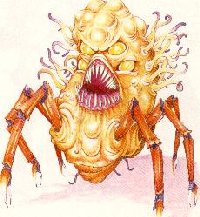

The Main Chamber

| Character Information | Place Information | Plot Information |
| Jump to Recent Notes |
He is an Aurumach, one of the high-up men of the Rilmani race. He's neither male nor female really, but takes either gender (or neither) as needed. For ease of pronouns, I've made him male for the duration, so long as the duration isn't too long. He maintains lots of identities around town, one of which is the Cantha persona.
His intelligence is literally godlike. I tried to show that by having him be able to monitor many threads of thought at once and to leap quickly and intuitively to the right deductions, a la Holmes. He should never speak or think without doing so in three parts. Three sentences, three phrases, three thoughts, whatever.
Obviously, he's my method of wrapping all the diverse threads of our story together. He'll be the central agent of defense when no one else steps in. He's the one out of the 99 aurumachs that exist that has been specifically assigned to watch over Sigil and maintain it as a neutral city, uninfluenced and uncontrolled by anyone. If the Lady didn't exist, he'd have to invent her. Or did he already? :)
I've given him unspecified psionic powers, which isn't called for in the statistics for aurumachs, but hey; these things are the Rilmani version of layer lords, such as the abyssal princes and ba'atezu dukes. A little individuality seemed called for.
The mindspider is mostly a device to allow me that 'undetectable observer' Ken was trying to eliminate. :) With a few exceptions, most of the named characters so far have a doodad on them that is the physical focus for an end of the mindspider's web. Anything 'attached' in that fashion is susceptible of having its thoughts and senses read by the spider, and thus Mertian. Two-way communication is possible only briefly, and once. That will burn out the thread after a few minutes.
The exceptions are Cray, 'the shattered mage' (Delva/Abigail) and Bliss. Mertian can read each of these characters directly, and communicate as well if he so chooses, without the mindspider's web.
Notice Mertian's comments about Ilsensine. His mental activities are undetectable by mindflayers, and most all other psionics. Cray is a rare exception to this rule. The Ilsensine connection is also why Mertian can read Bliss directly.
Cray and Mertian have some as-yet-unnamed unpleasant history between them. I haven't figured out what, just that neither likes the other much. Cray may not know many of Mertian's secrets, but he knows enough to make Mertian nervous. This doesn't quite leave us with the tragic scenario Mr. Mooney first described, but there's still room for plenty of pathos. I don't know why, but I see Cray as the central character of the story so far.
There is also a mysterious history between Mertian and 'Delvagail' as I've been calling her internally. What, I don't know. Just that there's something afoot. I've hinted that she was quite powerful when she was sane. I think Mertian is responsible for crippling her mentally, and that the Pandemonium thing is an implanted memory, or a part of Mertian's mind-breaking technique. That's when he established the link to her.
Magic Items: The 'universal portal key' that Mertian owns. Pretty much does what it sounds like. Very rare item, obviously, but since he can teleport anyway, it doesn't add much more than flavor to his character.
I realize I opened the door to this kind of thing by introducing Mertian. But he's not really a character, with hopes and dreams and quirks. He's a writer's plot device. He's there to move the story along. And right now, I don't really expect him to live through this story. When his usefulness as a plot device is gone, I plan to bump him off. So if you must introduce more recurring characters (please don't unless you *really* see the need for one, there are plenty running around) please make them *characters* and not mere plot devices.
Things were looking pretty grim for the ol' plot device. So I rebooted him. Ditched the spied-upon digs, planted a new spider, and set traps for those who come along behind. Shelaam wrote him nicely. Thanks for the trap development idea, buddy. Oh, please remember to write him as thinking and speaking in 'threes'. I know its hard, so if you don't want to do that but still want him in a scene, put him into a disguised form. Then you can write his dialogue however you like. Also, I tried to show that he's *not* omniscient by having the BCs be able to spy on him in the Astral without his knowledge. What else? Oh, the Lair and the Universal Portal Key. These are set to suck the whole lair into the Plane of Vacuum, breaking down all the portals and hipping whoever triggered the trap in the middle of nowhere. I had not envisioned the Portal Key as being able to create portals, but merely able to manipulate them. It's now pretty much out of the picture, so no worries. And the old mindspider is an obvious trap for any too-curious BCs. If one eats its brain, will Mertian get a direct line to their thought processes? And what would that do to him? Things to consider.
He's just as described, a petitioner who's essentially a nobody. Just the typical cager, to give the man-in-the-street viewpoint of what's going on. Sort of local flavor. I wanted a counterpart to Mertian, that cared about Sigil, but had NO power to spend in its defense. All I ask is that he not die too quickly, I think its important to have a common-man viewpoint.
I wasn't real happy with Nick charging out to do battle with the invading forces. So I backpedaled on his bravery, and then shoved him into the midst of things against his will. Nick is *not* an adventurer or a hero. He's a normal street-vendor who'd just like to see all this strangeness go away and have things get back to the way they were. I think Ken's mid-list comments about petitioners were very insightful. Maybe Nick can progress to *become* a hero, ala Luke Skywalker, but he's a long way from that now.
The deva is in some sort of trance and will not think or act of his own free-will. He follows *direct* commands and answers *specific* questions with short answers. He will not do anything contrary to his good nature. The trance is caused by powerful magic and its cure will not be discovered any time soon. Truth is, the deva can be commanded by anybody, but the mephit makes it seem like only he can command him and nobody has ever assumed otherwise.
My take on their history (feel free to alter it): The deva was exiled over some tragedy, captured by a fiend and sold as sex-slave to a succubus. She would torture him, then order him to heal himself, then torture him, etc. Special fiendish magic made him into a zombie-like slave, but the magic isn't powerful enough to overcome his good nature. One day, the mephit, messenger for the succubus, managed to steal the deva. Now the mephit has his own personal bodyguard-slave and jealously possesses him.
[From Mr. Niceguy] Uriel: Recognizes Cantha somehow. And not happily. A prior connection with Mertian? Who knows? I sense more possible background here.
Durthelaxus: Darn, I meant to say whether or not he got his wing and hand back from getting more dust thrown on him. Oh well. Someone else can decide that point.
Cray is somewhat the tragic character. He's definitely got problems, and seems that he has obligations. It is likely that his intentions will not be the same as the 'party' in general. Oh, and Cray's comment about taking up the sword? Who knows... When I conceptualized him originally, I never really thought as to what class he would be. But he is currently with a mage, a priest, and a psi.
[From Mr. Niceguy] I still think Cray's the hero of this story, although Sabrilla's growing on me too. Let's give the characters we've got a shot at winning the day, huh?
He's hitting an upswing in a manic-depressive curve at the end of my section. I hinted that he's become a Bleaker after seeing too many people die for a cause, and I think that's behind his retirement from whatever warrior's life he once led. And now he feels awful about dragging people into this sort of life once more. Is that about what you'd pictured for him, Brian? I've given him lots more chances for angst by forcing him to pick up a sword again. I meant to write a piece about his inner conflicts while staring at his old sword, but ran out of time and space.
The guy in the first part is a mind flayer that has left the ways of his people. (yea, yea, bear with me here...) He works for the Godsmen (the guys who believe that ANYONE can rise in life to be something BETTER.) at Harbinger House as a 'mental counselor'. He calls himself a Mind Friar (as in monk). He uses his mental powers to help and console, rather than harm and maim. (And, I figured that we need a 'good guy' that could possibly confront these 'mental bad guys' mentioned in Ch. 2. And no, he doesn't eat brains anymore...he has to feed on a special substance that he has concocted. The 'components' to create this 'fluid' are VERY expensive and VERY rare, and luckily, he doesn't have to eat very often. He struggles with his craving for the mental essence daily, but on a more philosophical level, not so much like 'Yum, Yum, more brains for me tum...' Anyway, you get the idea. (I hope!) His name is Blissziphelph...call 'em Bliss for short.
[From Ian Watson]: Since he recognized Cray before, I decided that they know each other, and are familiar with each other. Maybe not exactly friends, but then, who does have friends in Sigil?
I figured that we needed some heroes, however unlikely, on the other side, thus the Han-Solo like halfling, Tandin...
[From Ken Lipka] I agree that we need a hero in the Mazes to help us out. However, I took Branno's phrase 'on the other side' literally. I've broken with tradition and decided, at least in my mind, that Tandin is of evil alignment - most likely Neutral Evil. (An "evil" hero, imagine that.) This twist might allow him to successfully tag along with any enemy forces and get into Sigil by riding their coattails.
Magic Items: The 'maze key' that Tandin was given. The silver wire glows like a portal to planeborn eyes and it leads out.
The leader of the Orc band. I view Orcs as being more than the traditional AD&D idea of "low level cannon fodder" and I liked the first chapter where the Orcs appeared. Since Orcs are warriors, I thought it might be appropriate to use one.
The homeless. Both Cray and Bliss struck me as caring types - and I figured that they would not let her just run amuck without at least attempting to help her. It then occurred to me that she could be a valuable asset to the group - once she was cured of her "Barmyness." I'm figuring that Bliss could fix the problem (aka "Eternal Boundry" style), but will leave that up to the future authors.
[From Mr. Niceguy] The most altered saved for last. I think I now know who she is, but you all can certainly change that. I think she's Shekelor. I think Mertian was responsible for taking Shekelor out in the first place and that Cray and Co. are in for a major shock if/when they find Shekelor's Orb. She'll get all her memories and real powers back, and may not be a very nice person at *all*. I think Shekelor was too powerful to kill outright, and that the best the Rilmani could do was take away her memories and strand her body in Sigil.
What do you all think? Like all ideas, this is subject to revision and alteration. Maybe she's Shekelor's daughter, maybe she's just some poor sod the Rilmani used as a key to the orb. But I think she's become important to the overall structure of the story, and since I've brought back the power Shekelor was looking for, why not Shekelor too?
I decided to throw in an intelligent, subtle antagonist. The only "bad guy" we have in the story up to this point is the dergholoth and maybe the voice that spoke to Cray. Any particulars about him are left up to future writers.
[From Mr. Niceguy] I made the watcher a rilmani cause the description really put me in mind of the rilmani assassins, the cuprilach. And I think its cool to have Rilmani playing both sides of the street.
She is the owner and propriator of The Hammered Fist tavern. She has a very firm "no fights" policy in her place and doesn't hesitate to use her natural petrification abilities to enforce it. She is something of a "rogue" in that she prefers to be around people and is willing to take efforts to do so (the glasses). She is originally from Arborea near the burg of Here-Be-Monsters. It was there that she met Cray several years ago. This meeting proved to be the catalyst which caused her to finally risk leaving her home plane and travel, eventually ending up in Sigil.
[From Mr. Niceguy] I took the hint that something "happened" between her and Cantha and expanded that out. The "something" is still up for grabs but I certainly made it look like an intimate relationship. I think the more she's written, the more complex a character she becomes. Maybe it's me, but the "I just like to petrify people" explanation she gave seemed like a front, a denial of more involved motivations. Thoughts?
Tiefling mage. High level (8-11), high intelligence, above average charisma, fairly high dexterity. Usually a nice enough guy but has a very short temper when it comes to hurting his friends (or familiar [the ferret]). He also carries a Staff of the Magi. In game terms his tie. abilities are the standard ones (darkness 15' r, +2 vs. fire, cold poison, 1/2 dam. from cold, ect.) His appearence gives him small horns on forehead, red eyes that he can make glow (and automaticaly do when he's mad), blue-grey skin, an opposable tail which remains hidden in his robes at all times, and under normal sercomstances he casts no shaddow.
Half elven fighter/mage. Mid levels (7-9) Low charisma, above average intelligence, exceptional strength. He wears a Belt of Hill Giant strength (19). His sword is a great scimitar(2d6 dam, s-m) with magical flame (2d4 fire dam. does NOT ignite flamable thing unless left in contact longer then just getting hit with it) The sword was once evil and he fought it's old posessor (undead knight) for it. After destroying the old weilder he purified it and turned it good. (It was black, evil flame) When fighting undead he'll sometimes have flashbacks. These can either be good or bad for the group. (ie, good he fights harder, bad he might flee)
Together they make an efficient battle team. They start in combat by firing spells at the agressor if it's far away and then G'kar runs into the melee while Kerjal covers him. The'll never split up if a group's deviding and always go to the other's aid. The often have quarrels about things they've already done but they usualy don't raise their voice and it never comes to blows. In a tough situation it's like there minds are nearly linked as they've traveled enough together to know what the other's going to do by the look on his face or a back glance to the other.
She's a priest/thief. Total klepto, clinically so, but it doesn't interfere with her adventuring capability. Speaks in cockney-cant. I added her to spice up the serious Cray-Delvagail-Bliss trio. As a hermes priest, she's CG, but I haven't thought much beyond that. Is she a high priest? Raise Dead could make for an interesting twist at some point. I thought about it for the dead Githzerai and orc.
Magic Items: Possibly Harpsichord's staff. I also thought that winged boots would be neat for her.
Zhertil (the Githzerai?) was named just to give his death a little more meaning. Gogg is around if anyone wants to use him, but I haven't given him much thought. He could just as easily never be heard from again. Xanxost is so much fun in Faces of Evil that I thought we might want to throw in a slaad here, too. I picture him linking up with Tandin, G'kar and Kerjal, if with anyone. Or he could join the bad guys.
The last new characters are Iron Lily and Aqva'at. These are ba'atezu who will be leading part of the invasion. Autumn Skye will introduce them further in her part. I talked to her to get a link into her piece set up.
Pretty much just thrown into this by chance, the baatezu and tanar'ri were trying to lay claim to a portal to sigil's hive, strategically close to a very cheap, bulk weapons depot, and several caches. he hadn't been initailly given the command, only assumed command after his predascor (bad spelling i know) bought the burg (before the story blurb comes in on him slaying the spinagon)
Only thing special about him is he has no love for the baatezu(of course) and has little love for the tanar'ri as well, as long as he gets his jink and/or power he's happy(which makes him a good candidate for a leading villian, seeing as how i am assuming the BCs will offer something in return for the fiends service. the sword he slayed the baatezu with can either be normal, or magical, but i based it on the drawings in several PS books(page 3 in PSMCII shows a dagger base form) and gave it a special magic trait where(in game terms) on a roll of 18-20 it sucesfully skewers the victims heart(or other vital organ) on the two inverse spike things(just woke up, lemme 'lone ;)
I also figured that F'chak'tor was just the kind of cutter the BC's are looking for for their maze recruiting, doesn't care for the Baatezu, or the Tanar'ri and anything under that isn't even worthy of his time.
Note: If you read this you might think that this class seems somewhat overpowered, but always keep in mind the first section after the question. Most of the really dangerous powers require deep concentration. A slip here, a slight failure here and the shadow walker is scragged or put into the dead book.
In addition the concept is from a high magic campaign world, where every adventurer without mystic ability or at least a wild talent is usually considered dead meat. (Besides it is war and people do get killed in wars, but I didn't ask for it, mind you)
Jimora might be higher in level (speaking rpg-techincally) than most of the other characters in the story, but most of the other characters group, while she by nature of her profession cannot really become member of a group, so she's got to be tougher to survive and do her job. Just that it's assassinating bad guys.
[From Mr. Niceguy] Muuuch more tolerable. Still some hints of munckinism, (what exactly is she using to kill all these fiends in one blow?) but the character was much more stylish and coherent. The Kender looked like a random accumulation of powers. Jimora seems to have a history and a purpose that make sense. And there's only so much one person with a sword can do, which I tried to show in her segment.
Treat the kender from this encounter as a powerful fighter/psionicist, not as a your typical kender. Actually she has grown up among humans or elves and adopted many of their values, but retained her quick fingers. She uses them to free mages she deals with of the components they need to cast slaying spells. (She also hands them back after the deal is finished, or telekinetically transports them back to the usually surprised mage if she doesn't trust him/her/it.)
I havn't named her jet, as I still have to see, what you might do with her. You won't get rid of her. She has always enough psionic energy stored in her body to get safely back there and still be well shielded, when she astrally projects. If she is 'killed' or looses a mental battle, her incarnation just dissolves. She uses strange and little known psionic powers, that set even experienced psionicists on the edge, so don't try to find this stuff in the AD&D rules.
As an illustration just how powerful she is, the kender went into an area that was infested by illithids against all warnings. She defeated their elder brain in mental combat and killed the confused mind flayers before they reoriented themselves. What she doesn't know is that she has actually drained the elder brain of most of its power and knowledge - at least the portions that wouldn't drive her insane - using a wild talent her mistress never told her she had.
For the warrior part, she is the leader of a legendary and successful mercenary company on the prime. She had other planar adventurers. While her warrior's philosophy is basically agreeable with the ciphers, she joined the sensates, and came to know factol Erin Montgomery, who was intrigued by the unusal female. They became friends and they still are, even though they rarely meet. Originally operating from Krynn, she has relocated her company (with the aid of powerful gating spells) to the world of Toril, when the Chaos War started.
As the leader of this mercenary company, that only takes jobs to fight opponents they know to be evil, and are still good enough to make more than a living by it, she is often kept busy. So if you don't want her around, don't bring her in. As another note she has perfected the art of syncronizing swords and sorcery on the battlefield, to a degree, that makes most generals and war leaders shiver in awe (or fear of they are her opponents).
I think she might make some appearances investigating the dead bodies and trying to find out what it is, and tracing the psionic energies to the origins. (Hello Mindspider :) ) She doesn't really actively do anything, except maybe somewhere nearer the end doing mental battle with several Brain Collectors. (They are psionc?)
[From Mr. Niceguy] On the subject of new characters: Jimora & The Kender. Ugh. I'm sorry, the Kender was too offensive to live. It was screaming 'Munchkin' in big bold letters.
"I'm a psionicist capable of trashing elder brains who's such a powerful warrior that I command a legion of mercenaries on my home world (which isn't my home world, I moved) from which I'm astrally projecting into Sigil (!!) so you can't kill me, but I can still use all my psionic powers against you, nyah, nyah, nyah?" And this monstrosity's a KENDER????
Puh-leeze. Lady of Pain, I'd like you to meet the Kender. Kender, I'd like you to meet a humiliating death. People who astrally project into Sigil get what they deserve.
Note that the Kender's still around, though. Since I couldn't take it seriously, I decided to make it comic relief. Who knows? As a ghost, Ms. Pinkbottom might be useful. But no more of this 'I'm so tough, you can't kill me' screed, please.
I made Pathosis a high priest of Osiris, because you can always use more priests in a party. And dustmen are fun to write. I envisioned 187 staying behind and watching the morgue while Pathosis goes off to help the group effort, but maybe someone else will want to drag it along too. It's quirky enough that it might be fun to expand on.
The proto-typical adventurer. I see him as being the type of veteran that nothing phases, ready for anything. That sort of forces him into a less-interesting, secondary character role though, so maybe someone else can liven him up a tad.
Next, having just got the MCA3, I felt it appropriate to put something from there into the story. Purguliss is an ooze sprite, a "thing" made of ooze that communicates via sign language to "to those who understand". I doesn't say how those people speak back to the sprite, so I just assumed it was a form of ESP or something. Purguliss seems a little more helpful than most Ooze sprites, so either he's a nice guy or he has some ulterior motive. Maybe he'll follow our heroes through to Limbo. On another note, seeing the bubble apparently collapse and start filling up with ooze couldn't have been very good for Harpsichord's claustrophobia. And Delva's discomfort at the ooze might very well have been something else....
And third (Love that rule of threes), the bit in the alley. Strontian, having seen what he had previously accomplished, would definitely have figured out by now that the Factols weren't toast after all. Also shows that although he hides it well, he has a bit of a temper. After all, he "disposed of" his old intelligence.
Sigil's 'astral space': I think you can enter the astral plane within the city so long as you don't try to leave it. And vice versa. While researching this part with the Guide to the Astral, I discovered that BCs are mentioned on page 75 of that book as a potential monster to be encountered on the Astral Plane. So the speculations about the BCs using the astral to manipulate the portals and mazes makes more and more sense to me.
Feast & Famine: Its main purpose was to get Cray's group from the Lady's Ward, where he'd last been sent, to the Hive Ward, where the ooze portals are. I'm indicating that ooze portals aren't controlled by the BCs, and are one of the three ways I see that people can get out of Sigil without using a regular portal. For the lowdown on ooze portals and what they do, check out In the Cage. If you don't have it, let me know and I'll post a summary to Ken for the Plot page.
Voidjumper Inn: The second way out of town. Leap off the edge. The Voidjumper usually is a bleaker/xaositect joint, where they can stare (or jump, as desired) out into the void beyond Sigil. It's run by a fat old Blue Slaad who thinks its funny watching mortals jump to a random doom. Someone mentioned on the list that given the infinite qualities of the Abyss, most such leapers would land there. So that's what happened to Aqva'at.
Here's my idea for a theme. I've tried to include all the various ideas made so far.
A bunch of bitter rogue dabus have started the entire war. They want the Lady to be overthrown and don't really care who does it. OR they've been corrupted/brainwashed. By working for the Lady, they've learned the nature of the portals and how they function.
The dabus teach this to the Brain Collectors, whose alien outlook and spell-like abilities gives them special insight into controlling the trans-dimensional nature of the portals. The race has its own alien reasons for controlling Sigil, perhaps they want to move on from prime brains to more enriching planar brains. On their homeworld, a thousand elder ones prepare for the event. They need lots of brainpower to control the portals and it helps if the victim's brains are energized with fear or hatred for the Lady of Pain. It will be fairly easy to redirect the portals, but it'll be hard to control them if the Lady is fighting back. No petty emotional squabbles (like those of humanoids) will prevent them from combining their efforts.
The conquerors wait and wait until, at dawn of Day One in our story, the Lady briefly leaves Sigil to create a new Maze in the Ethereal. At that moment, the brain collectors focus all their attention on trapping the Lady in her Maze. Everytime she tries to escape by using the portal or creating a new one, they redirect the portal back on itself. Outside of Sigil, her centre of power, the Lady is hardpressed against the combined efforts of a thousand elder Neh-Thelggu.
Meanwhile, the dabus visit the Mazes, under the pretense of checking on things. They tell the embittered prisoners that the Lady has gone insane and they lead them out of the Mazes to revolt or whatever. Of course, this portal actually leads to the homeworld, where they are eaten. The collectors are now empowered with the many brains of those who hate the Lady. This helps them to contain the Lady.
For the rest of the day, the brain collectors redirect all portals (non-Sigilian side only) to the Mazes. Anyone trying to enter Sigil, will instead enter the Mazes. They'll wonder what they did to deserve this. First confusion, then fear then anger towards the Lady. Their brains will become prime fodder for the brain collectors. Then they will "luckily" come upon an exit portal.
Portals in Sigil and portals in the Mazes are redirected to their homeworld. Anyone leaving Sigil or the Mazes will be eaten for their brains.
Now, not all the Maze prisoners are tricked into slaughter. The more powerful evil ones are told the real plan, and they are allowed into Sigil to impersonate the Lady and kill people. A hundred different imposters go on a murder spree throughout the day. To the people of Sigil, it appears that the Lady is killing people everywhere. Many of the citizens flee through the portals (why stay?), and their fear-filled brains feed the brain collectors.
Then they redirect certain portals to allow armies of fiends to enter. The city falls into chaos. More people flee from this wretched city, more brains feed the collectors.
By the end of the day, the Lady has managed to beat even a thousand collectors and entered Sigil, to find it half-empty, invaded by fiends, and her name reviled. Her own estrangement from the people makes it difficult to unsoil her name. In retaliation, she shuts down ALL portals, cutting off Sigil from the rest of the multiverse. No more fiendish armies come in, but the citizens are still fighting off those who came before.
However, the brain collectors have had many energized brains -- from people who left the Mazes and from people who fled Sigil. They begin a powerful ritual that will open a single portal into the lair of an evil Power. The next day, a god will enter the city and slay the Lady. The characters have got to use all their ingenuity to stop this.
I went through my seemingly infinite AD&D collection, and lo and behold, found my Mystara MCA. Here are the stats for the brain collectors...  Climate/Terrain: Any Frequency: Very Rare Organization: Solitary Activity Cycle: Any Diet: Brains [duh!] Intelligence: Very (11-12) Treasure: Nil Alignment: Chaotic Neutral No. Appearing: 1 Armor Class: 2 Movement: 18 Hit Dice: 10 THAC0: 11 # of Attacks: 1 Damage/Attack: 1d10 (bite) Special Attacks: Spells Special Defenses: Spells Magic Resistance: Nil Size: L (10' long) Morale: Elite (14) XP Value: 2, 000 Brain collectors (Neh-thalggu in their own language) are rare creatures who occasionally cross the barriers separating their distant home from the Prime Material Plane. Only near sources of great magical energy, where the fabric of space and time is twisted, can they find small gateways to Mystara, where they collect the brains of intelligent beings. Each specimen of this hideous race has a yellow-orange body - bloated, oily, and amorphous - with dozens of short, writhing tentacles. Six crablike legs allow it to scuttle about. Four large, yellow, bulging eyes and a tooth-filled maw are set in its bulbous head. The head may also have a number of distinctive lumps (up to twelve), each one housing the brain of another intelligent creature. Neh-thalggu do not think like any other creature. They speak their own tongue and that of diaboli (see "diabolus") [a bunch of demonic satyr-looking things, from the Demiplane of Nightmares, reportedly, that really aren't bad. Usually Chaotic Neutral]. They can also speak and comprehend the languages known by any creature whose brains they've swallowed. COMBAT: The brain collector's method of attack is a powerful bite with its razor-toothed jaws, inflicting 1d10 points of damage with each bite that hits. Each brain collector can cast spells, depending on how many brains it has collected. Roll 1d12 to determine how many transplanted brains the monster already has in its head. Each transplanted brain can hold a single wizard spell, no higher than 3rd level (these can be chosen by the DM or randomly determined by dice roll; 1d3 for level and then according to wizard spell lists). A brain collector can attack with its bite or with a single spell in a given round. Although the nature of its intelligence is unfathomable, brain collectors display a considerable tactical cunning in combat; they will use their available spells to the best possible effect. A brain collector takes great care as it fights, to avoid doing damage to the cranium of its opponent. As its name suggests, the brains of sapient foes are very precious, indeed. HABITAT/SOCIETY: Though brain collectors have a completely alien psychology, "chaotic neutral" is the alignment that best describes them. The Neh-thalggu do not have hostile intentions as such; rather, they do not seem to regard humans or other humanoids as people. Brain collectors are known to exist on the Demiplane of Nightmares, where they hold a mythic position in the folklore of diaboli, like that of dragons in human tales. Diaboli regard Neh-thalggu as creatures of power, cunning, and inscrutability, and brain collector magic can affect diaboli. While Neh-thalggu exist on the Demiplane of Nightmares and the Prime Material Plane, sages agree the creatures are native to neither. Brain collectors may also be found wandering other known planes, particularly the Astral or Ethereal Plane. On the Prime Material Plane, a brain collector prefers ruins and caverns and other places with little light and infrequent disturbances. When a brain collector reaches the Prime Material Plane, it immediately begins acquiring as many brains as it can, as quickly as possible. Each collector can store up to 12 brains at any one time. When these creatures slay humans, demihumans, or humanoids, they carefully cut away the top of the head with surgical tools to expose the brain, and then swallow it. The swallowed brain then moves into one of the several pockets within the brain collector's own head, forming a distinctive lump. For each brain collected, the creature gains the ability to cast one wizard spell of 1st to 3rd level once per day. When a Neh-thalggu has collected its 12 brains, it immediately seeks to return to its home plane. One theory holds that with 12 collected brains, these monsters can, in certain locations, re-open the link to their native world. Fortunately, few 12-brain Neh-thalggu have been encountered; since they can collect no more brains, they are more eager to move along than to engage opponents. The brain collector may be related in some fashion to the feyr (described in the Monstrous Manual). ECOLOGY: Brain collectors have no interest in treasure of any kind; denizens of the Prime Material Plane are curious objects for dispassionate study and ruthless exploitation - cattle, in the brain collectors' eyes. Neh-thalggu are predators of the highest order, but they exert little influence on the Mystaran environment. Tailor fit as you desire, this is a story. (:
Maybe a little love interest here? A possible love triangle with Cray, Sabrilla, and Delva/Abigail? It's up to the future authors. I just provide ideas.
Well, the githzerai is actually giving out a slight clue. You see, he was wounded in an encounter with a brain collector, but near the end he went crazy from trying to touch the thing's mind. The "me and me and me..." reference means that he's actually partly in contact with all the other minds that the brain collector has..um.. collected. Rather freaky, really. Well, I'm still not sure if the "voice" is the brain collector itself, but I'm attempting to make it as alien and as strangely-thinking as possible.
Okay, details. Since we've moved on to anti-peak (midnight), beginning of the next day, I figured it would give the group time to trek around and deliver the messages to about half of the factions. I envisioned them taking the Gatehouse first, then moving around to the Hall of Records, Civic Festhall, etc. leaving them out by the Grand Bazaar. I didn't plot it out exactly, so anyone wanting to tackle a particular place (such as a party at the Festhall) has an opportunity.
I figured if any were interesting it would likely be the Shattered Temple (and yeah, I'm an Athar freak) for the fact that if the Portals are shutting down, somebody's got to be thinking about that dead god, claiming Aoskar's revenge. But who knows? I would've written it, but the timing didn't feel right.
OK, Durthelaxus wouldn't have time to check out the whole tavern, but what happened is that a nighthag (or yugoloth) came through the portal with an army of hordlings. This is one of the invading armies obviously. I don't know what'll happen to the mephit and Uriel. The mephit is sorely wounded and lost consciousness, not necessarily dead. So he can be captured (and the nighthag needs a damn good reason to keep them alive) or Uriel momentarily snaps out of his enchanted trance (because of the unusual urgency of the situation) and teleports them away somewhere. I guess the two hordlings attached to the mephit would come along as well. I'm not aware of any magic powerful enough to un-meld their flesh, simple healing wouldn't do it, so maybe he needs to cut off his hand and the tip of his wing.
If I've made the situation difficult, well, I don't believe in stories where everything is easy for the characters. This Sigil invasion is very very dangerous; people will get injured and several should die.
You'll notice that I've emphasized the chaos in the streets, the thousands of people evacuating the city and therefore feeding the brain collectors.
I also suggest having one type of invading army per ward. ie., the hordlings in whatever ward contains the Hammered Fist. Tanar'ri in another ward, baatezu in another, etc. I think its neat that way.
I have an idea for how the Lady imposter will work. People are pholymorphed to resemble a woman and dressed like the Lady (pholymorph vs illusion cuz many planars have good resistance to illusion). Using magic, the imposter hovers in the air, or maybe the pholymorphed imposter is really a renegade dabus with natural hovering power.
With the imposter, are alot of bladelings or warriors with sharp magic swords. They're under improved invisibility and silence spells, or even better, dust of disappearance which no planar can detect. The imposter looks at a victim, at which point the invisible warriors close around him and slash him up at once. To the observer, it looks like a Lady has killed him with her gaze. There's a whole bunch of these imposters and invisible warriors, and I have no clue where they get all these spells and kegs of dust of disappearance.
This is only a theory, but I felt that it was a fairly sound one. It could be some sort of strange resonance effect resulting from the Brain-bad-guys' magical and mental energies that are being expended in order to 'subvert' all of these portals (which would seem to be QUITE a great deal of energy, IMHO).
At any rate, it gives those within the maze something other to do than run around from bad-guys, and it also gives them a direction to head towards, i.e. a possible way out. My original idea was that a GREAT number of 'resonating portal keys' would have to be gathered before *ANY* attempt at creating an 'artificial' portal could even be attempted. Also, I figured that it would be good to work in two other aspects as this 'thread' of the story continues (if it, indeed, does)
1. Not all portal keys (for whatever reason, mainly the whim and folly of the multiverse) do not resonate or echo with their 'old' energy. I would figure, in this case about 20% would, while all the others would be 'spent'.
2. I thought that it might be good to work in some rare component that would be discovered (perhaps by a high-up divination spell) in order to get the final 'Portal-Opening Spell' to work. I also figured that it would be groovy to work in the component as 'the hair of a nightmare', or some such element of a nightmare, thus tying the spell back in with the nightmare that Tandin conjured to fight the 'loth...
I've indicated that intra-city portals still function. The bad guys haven't blocked them, just the ones that lead in and out of town. If we want to change that later, its easy. It must take time to block all those portals. I've also corroborated that personal mazes are separate from the ones controlled by the bad guys, and still exist as the lady made them.
Cray's mission is now set out clearly. Alert the factols by dawn tomorrow. That'll give us all sorts of opportunities to describe the factions, who HAVE to take part in this somehow. We don't need a scene with each factol (unless you want to write them) but a couple would be nice.
I've alluded more to the Lady of Pain being wonky somehow. Still no firm indication of exactly how or why.
I've tried to play down the brain collector aspect and play up the fiend part. I thought the 'master plan' was to reveal the BCs slowly, and at the rate we were going, they'd be on scene and fighting in the next chapter.
I've tried to solidify our good guys into three distinct groups. I meant to add Stefan from the Hammered Fist into the mephit-medusa-deva group, and make him a rogue, but didn't have the time. I was aiming at 3 groups of 4 members, but missed the target a bit. Oh well.
What else? Oh, yes, almost forgot. Insanity. As I wrote, it seemed to loom more and more as something that might be critical somehow. Thus the addition of Harpsichord. Cray's little group is all a little off their rocker. Maybe the BCs can't stand the taste/smell of insane minds? Just wonderin'.
OK, here's the notes on what I was trying to do with my segment of the story. Basically, I was playing a mid-list Mr. Niceguy. I went back and found some story threads that hadn't been touched for a while and brought them back to keep them from getting lost.
The first bit deals with F'chok'tor, the cambion general. When we last saw him, it was Peak on Day One and he had just accepted a deal from the Brain Collectors to help them with their plans for Sigil. Rather than leave him in the Maze, I decided that the BCs would want him to lead a force of some kind against Sigil. So, I decided that they would have let him out with money and magic scavanged from victims to assemble a legion. Thus, the scene in Plague-Mort.
My ideas on how people can work with this is that this force is how Tandin and friends can get out of the Mazes. They can either follow the charging hordes as they are led through the Maze to get to the exit into Sigil, or they can waylay a few of the attackers to assemble some more keys to build their own exit. I am sort of picturing that all portals into Sigil lead through one or two Mazes, so that this troop will quite possibly pass through where our heroes are.
The second segment was done to provide an alternate way of getting out of the Maze if people don't like the first idea. Some one mentioned possibly needing the tail of a nightmare for the spell. Well, here's a way to get to it. I figured that a Dergoloth could beat a Nightmare in combat, but it wouldn't come out scot free. So, we now have a firm resolution to what was posted before, as well as a method to get some personal combat into the story if someone wants to write such a thing. Also, it's a convienent way of getting the spell component to the heroes, rather than "wasting" time by having them search for it.
The third piece goes back to our "man on the street" again. I agree with Niceguy in that we do need to have some viewpoint of the "normal" man in the story as kind of a barometer as to how things are going over all. I decided to address what happened to him since yesterday as well as provide an idea of what was going on in the city. I figured that the factions would take the opportunity to take the Kreigstanz out into open warfare. I also hinted at some of the other forces that would be at work in the city as well. And yes, I did intentionally directly copy the open paragraph from Niceguy's work. It's done as a literary technique to emphasize the differences in the city. Also, it does help reinforce Nick's petitioner nature (they are kind of programmed to do the same thing every day). I figure we can probably end the story with an entry from Nick going through his morning routine and having it work.
As a side note, I realize now that it might have been a bad idea to press for a new day to start up with the beginning of the list. We don't have nearly enough writers now to make this feasible - unless, of course, you all start writing more segments to make sure the time gets filled in properly.
When the silent watcher put the snake into Delva's (right name?) back, Bliss felt that something was wrong and awakened for a moment. Later he berates himself for not having been more carefully, but he was so exhausted that he was already snoring aloud (figuratively spoken, mind flayers don't have a voice. Then he looks over the bleak scene and wonders, who he can watch his companions without arising their suspicions and without making them even more paranoid, than they might already be.
Then he starts to meditate to regain his mental powers, as illithids are notoriously physically weak and aren't of much use, once their formidable mental power starts to drain. The two lids on the eye might just be poetic license. I just don't have a MM ready, and most likely it would miss a detail like this one anyway, because it doesn't have any real gaming implications.
The tanar'ri rampage and the ensuing battle shouldn't really surprise anyone, it is seen from the point of an observer, who wasn't really personally involved.
----------------------------------------------------------------------- The Shadow Walker ClassNow, What In The Name Of The Nine Hells Is A Shadow Walker?
Pratically they are very dangerous good-aligned assassin, as their magical adept powers do only work when focussing on the good of others, and the people they help by slaying someone. Naturally they will only slay evil beings. Their magical enhancements malfunction if the target isn't evil or has strong evil tendencies. Needless to say, they are exceedingly rare.
Technically another character class. Shadow Walkers are a Rogue Subclass.
I minimize racial restrictions on classes, so PCs of almost any race can become a shadow walker with the exception of dwarves and earth genasi. (some saurials might be excluded too. Use common sense, the shadow walkers are graceful, swift and silent, and some races just don't have these traits, so they can't become shadow-walkers.)
There are no level limits. I don't use this rule. (gives pesky humans too much power.) Make it up yourself if you want to use it.
Shadow Walkers have the following Thieving Skills:
Hide In Shadows 20 Move Silently 15 Open Locks 15 Climb Walls 30 Escape Bonds 15 Rope Manipulation 20 Create Poison 10 Cryptography 05Beginning shadow walkers may spent 40 points to increase their thieving skills and another 20 witch each level they gain. None of the ratings may naturally exceed 99%
Shadow Walkers gain thieves' backstab damage multipliers.
Shadow Walkers may only be of Neutral Good and Chaotic Good alignment. Alignment changes of Shadow Walkers may only be caused by the character (role-playing) or by divine intervention and artifacts. Usual alignment changing powers don't work.
Any change of Alignment to any other than those above (being assassins they cannot be lawful good) causes the shadow walker to loose all adept powers listed below.
Shadow Walkes may use all weapons allowed to thieves and can stand their own in a fair fight too if they have to, but they prefer the silent method.
Being adepts, Shadow walkers gain the following magical abilities, as they advance in level:
2:Skill Boost * A single thieving skill of the Character's (player's) choice is increased by 50% * For every three levels anothe skill may be temporarily boosted, that is two at level five, three at level eight, four at level eleven and so on. 7:Shadowform * The shadow walker becomes a shadow and is 90% invisible in all but the brightest sunlight or equivalent thereof. * The shadow walker had to materialize completely to hit anything. * In shadow form the shadow walker is intangible and cannot be hit by normal weapons. For magical weapons only the bonus is dealt as damage. Spells do normal damage. * At level twelve the shadow walker may only partially re- materialize to do damage, but at least half of the body is exposed. If there is sufficient shadow (DM's choice, the shadow walker may (instead of a second attack) become a shadow again. 12: Shadowport * At this level of power the shadow walker may teleport from one shadow to another in sight once a day. * At level 17 the shadow walker may transport herself to any shadow in a place she has seen before. If there ain't sufficient darkness, the transport fails. Transport is without error, but may never cross planar borders (or break through the Sigil teleport shield.) * At level 21 they may cross planar bounderies, except Sigil of course. 16: Silent Death * At this level, shadow walkers may slay without rematerializing and do damage as though they where magical creatures in respect to what they can hit unarmed or with their dagger. * Who said assassins fight fair? not even good-aligned ones do. ??: Shadowstorm * It is believed, that truely powerful shadow walkers may cause a maelstorm fucussed on a group of evil beings, that slays every- thing within and tendrils jet out to destroy other evil beings. This power is at minimum gained at level 25. * In addition it is also believed that this storm draws on energy from the negative energy plane and the plane of shadow and doesn't work in the outer planes.The XP table has been omitted, but I will try to make one up, if anyone is interested. (I have ported this from a more flexible system, so you might have to wait for it some time if you ask.)
There is another type of similar assassin adept, that is thouroughly evil. They are called Nightstalkers and those who survive their trials for some time are extremely dangerous. They are versatile, usually unpredictable and devious. Nightstalkers don't care for plots, only for their jobs, and they take jobs from all sides and have the skill to live through it. People like dealing with them about as much as they like dealing with Yugoloths.
Go figure.
Shadow Walker and Night Stalker concept (c)1997,1998 by Lars H. Loeher.
The theory the kender told Erin about is about the lady of pain, the dabus and Sigil in general. The basics of it are pretty simple:
The cage is a hive. The dabus are the workers of the whole thing, mending everything and keeping it running. Somewhere deep beneath the surface of the city (there is a tunnel system, it's mentioned somewhere in the source material, but I don't remember where) lies a great chamber, where three beings are. One co-ordinates the drones (dabus), another co-ordinates the warriors (always cloaked in illusions) and the third breeds drones and warriors. (Laying eggs wich are tended by drones until they hatch, then the younglings are instructed by their respective group.
Because they basically sit at the heart of the city, the three know everything that is going on anywhere in the cage. (Maybe the cranium rats are their spies.) If something goes horribly wrong, they create the illusion of the LoP and sent a group of their warriors there, who take care of the problem. No-one knows what the warriors really look like, but those who made up this theory think it ain't anything nice, being able to shred everything the way they do.
The three beings themselves are only an incarnation of the mind of the city itself, which needs an executive arm. (This mind cannot be dominated, neither can the LoP...) These three beings aren't immortal, so they have to find successors on occasion. This one of the beings then gives birth to a small parasitic being that crawls into someone and they finally change and then disappear. On the other hand maybe the parasite just grows within them and bursts out of them.
(Maybe I have been watching Alien 4 too recently :) )
It's just a theory. I actually have another idea, what is really going on, but I will just see if it fits, when my turn comes again, or my turn after that... (If it doesn't I will keep it for another plot.)
If you deciede to keep Jimora around, I will write up an background for her too. It's just that she seems so powerful compared to the other characters, and you might think she is unbalancing the story. On the other hand I might not have made the disadvantages of the Shadow Walker class obvious enough. While they are powerful, they have many flaws and are simply extremely hard to play them (or write about them) the way they are supposed to be.
I didn't write a more personally involved section about the battle for two reasons. First it would have been a lot longer than it already is. Second I wasn't feeling fiendish enough to write it from the cambion's perspective. Someone else might write what he thinks about the battle in retrospective. That's of course only my suggestion. Do with it what you want.
On the Kender's Statement: Only Astral Projection (the kender uses something similar, but it is an IMAGE, not a direct projection of her self) into the cage works. Since planar "ghosts" cannot really do anything except talk, it is not much of the problem. The teleport lock is still securely in place. (The kender may use psionics from her "Spell Image", as though she where there herself.)
That's it for now. I hope the story section is good enough to fit with the rest, and the C&P sections are sufficient. If the latter are not, feel free to ask. I will just watch and see what you do with it. It's a chain story, so that's only my section and I will read along what happens and work with that when my turn to write comes around another time. On a second thought, maybe I shouldn't have introduced a new character (or were it two? :) )...
Well, it's to late for that now.
Starting the story in Mertian's lair, I felt the need (both for my direction and the coherency of the story) to distill far-flung facts in order to see what is important from our erstwhile hero's perspective. As what I've written here is obviously rather important as a sort of summary so far, if any of it is wrong please say, so that it can be altered.
Apart from that, a couple of Mertian's musings could use an explanation of what I intended (though probably different from what they will eventually come to mean ;). Regarding the infiltration of his network, I believe that Mertian doesn't know how badly he has been compromised - the bottom of Page 1 suggests that our mysterious watcher is either a Rimlani turned rogue or one working legit but at cross purposes (perhaps the entire war is nothing but a test of Mertian's capability). Either way, the enemy knows more about Mertian than he thinks.
Secondly, the issue of the Lady, which is the central thread of my segment. Mertian's third, unprinted, possibility is that the Lady is still in control, but her strange behavior is a deception and a defense against a dire threat. Being a bit of a Lady worshiper myself, this is the course I led the story on.
I theorized that the reason for the massive fiend invasions of Sigil was to provide a huge number of deaders who's brains could be collected by the likes of our little crablike friend (under the guise of psionic invisibility or suchlike) and taken back to the Elder Brain to fuel its strength. What the Lady is doing is letting the baddies think they have control of the portals and creating her own huge bunch of deaders - but ones which will give our friends a slight case of indigestion.
A crackpot plan? We shall see.
By the way, I had no idea of what a Brain Collector was supposed to look like, so I turned my cunning little pet hermit crab into the villainous footsoldier. No doubt the Elder Brain will look like my girlfriend ;)
I don't think I did all that much. I expanded the scope a little bit (or maybe I didn't, depending on how you look at it), added in a bad guy (who, for all you know, might simply be the amalgation of the BC's collective. I prefer a deity-like coordinating force though- kind of like what Mertian's doing, only for the would-be conquerors of Sigil).
The only people who've probably been doing things other than what I've detailed in the evening/night of day 2 are Nick and F'chak'tor. I expect Nick's just wandering around lost in the dabus warrens and F'chak'tor is being real careful around Kadyx. But I had other writing duties to attend to, and couldn't catch everything.
I've gotten all our heroes together in one group or another (or pointed them at each other at least - I'm thinking of Pathosis here) and assigned new missions. Since they were all in Sigil now, I thought it was time for them to deliver their reports to Mertian and bump the plot forward a tad. Time marches on!
The second main thing I had to attend to was to explain the 'little change' dropped on us by Yingzhi. I think he's right, there needed to be a co-ordinating force for the bad guys, so I've tried to make the enemies hierarchy a little more clear.
To be totally specific, here's a table:
Transcendent Enemy <-- / \ \ Brain Collectors Strontian the Soulsnake / \ / (?) Attacking Fiends Dominated Factioneers / \ (F'Chak'tor) Iron Lily \ (Aqva'at)F'chak'tor isn't really working for the BCs any more and Aqva'at is compromised as an agent for the aggressors. Strontian is using the Transcendent Foe for his own ends and thinks he's at the top of the pyramid. He may/may not have influence over the dominated factioneers.
On that subject: Lars hinted that the bad guys were trying to get control over the factions by getting the behind-the-throne powers under their thumb, and I ran with that. The whole sequence with Cuatha (Erin's boytoy/bodyguard) was written to show that he's now playing on the visitor's team. Make of this what you will.
The Watcher in the Shadows has now been named: Strontian the Soulsnake. Thanks to Arawn for providing the inspiration. I envision the soulsnakes doing the same sort of thing that the mindspider does, only with some nasty side effects. This means that Strontian's got an eye on Cray and Co. and that Delva/Abigail may be a potential future traitor. More on her later.
I don't know whether Strontian is an aurumach or a lower ranked Rilmani shooting for promotion. It's clear he wants Mertian's job though. I currently see him as sort of a wild-card back-up to the main thrust of the invasion.
Iron Lily and Aqva'at: I've moved the ba'atezu army closer to hitting town and gave a reason for why the ba'atezu haven't attempted anything like this before. They should impact Sigil at Peak on Day 3, and make quite an impact indeed. I don't know how *big* this army is, though. Any ideas?
I made Aqva'at more of a screw-up than perhaps Autumn had intended, but we can always redeem him with a bit of cleverness later on. And if he can get his message through that they're all being duped, Iron Lily's Legion could even end up working against the general invasion plan.
Brain Collectors: I wrote the bit with Pathosis mainly to correct Shelaam's description of the buggers. The description I used was essentially the one provided in the Mystara Monstrous Appendix. Can anyone scan the picture provided in that appendix and get it to Ken for use on the plot page? I *might* be able to, but if you've got a scanner and the book, you're a scanner ahead of me.
Also, Stefan's description of them adds some powers not indicated in the Monster Appendix. Specifically, I've given them the immunity to magic that Diaboli have. Unless you're from their level of reality, your magic doesn't hurt them directly. It's like unfailing MR. I figure the magic thingies Kerjal recovered are powerful enough to be able to affect them, though.
The Transcendent Enemy: OK, this is the *really* new part. Yingzhi alleged that the big bad guy was behind the destruction of two entire planes countless millenia ago. About as bad as a bad guy can get. More powerful than powers. Verrry hard to write around if he's in the fight slugging. But beaten once before by the Rilmani.
So what I did was take a bit of 'official' legendry and insert it here. I've decided that the person/force Yingzhi created should be the one that's alluded to in the Shekelor plot revealed in Uncaged:
Shekelor was a mage who, 10,000 years ago, tried to wrest Sigil from the Lady. He was failing, (but not by a lot) so he then went to let loose an even *greater* force that had almost beaten her millenia before *his* time. Shekelor got scragged before he succeeded, and his mind/ spirit is supposed to be contained within a gem/orb on Pandemonium.
There can't be that many forces so powerful as to have a real shot at taking over the Cage, so I've combined Yingzhi's bad guy with the one that Shekelor sought.
To account for the transcendent foe's power level, I've said that it comes from a 'higher' plane. For anyone with Doors to the Unknown, a similar idea was used for the villain in that plot.
I've postulated that there are planes even farther 'out' than the Outer Planes. These are even more abstract than the Great Ring, and *exceedingly* difficult to get to (and from) physically. Diagram:
Inner Planes | (ethereal as buffer) Prime Plane | (astral as buffer) Outer Planes | (astral as buffer???) Ascendant Planes | (no soddin' idea what the buffer is) Transcendent PlaneI've contradicted written TSR material by making the Demi-plane of Nightmares (which is where the Brain Collectors come from) one of these ascendent outer planes rather than a demi-plane in the Ethereal. I also moved the mercurials from Doors to the Unknown up to this level, too, just to show that there are more inhabitants of higher reality than the ones we're seeing in the story.
The big Enemy comes from a plane even farther 'out' than the one the BC's come from. I see Transcendence as being the plane where the Forces and Overpowers reside, like Death and Ao and the like. The last stop on the line, this is as powerful as its possible to get and still be able to interact with planars at all. Things so powerful that powers are like playthings or children to them. Like the critters in the Cthulhu mythos, things from Transcendence are just more real than lesser beings can deal with.
While the Enemy's bad enough to snuff any of the other characters by just breathing hard, I think he isn't really able to get into the Great Ring to do the kind of damage he wants. The whole point of this exercise from the Enemy's p.o.v. is to get control of Sigil long enough to open a portal that he *can* translate his incomprehensible energies through. *Then* we'd be facing a situation like the one Mertian saw in the ancient Mimir on the plane of vacuum.
Current Missions:
Tandin, Durthelaxus, Uriel and (I hope) Pathosis: Check out the Dabus warrens for some indication of what's going on with the Lady. I still don't have a feeling for what her problem is, but this seemed like a cool location to set some scenes in, and I wanted to see some interaction between Tandin and Durthelaxus. Oh, and with Nick already in the Dabus warrens, this gives us a chance for our man-in-the-street to watch some other characters in action.
Sabrilla, Stefan, Kerjal & G'kar: Look for BCs doing nasty stuff to faction high-ups and stop them. I have no idea at all where this will go, it just felt like something that needed to be done. If the BCs gain control of some factions, the Kriegstanz might *really* heat up!
Cray, Delvagail, Bliss & Harpsichord: They're off to find the wizard... But are likely to get lost along the way. Maps through Limbo don't sound too reliable to me. In addition to the Shekelor plot thread, this gives us a chance to describe some other planes, which should be fun. Wonder how they're supposed to get back when they find the orb?
Jimora: Find and take out the Soulsnake. Difficult to do, considering no one on the good guys' side even knows who he is, where he's at, or what he's doing. But this seemed like the appropriate task for Lars' shadow assassin.
Bimbalina Pinkbottom, dreaded mercenary captain: Stay dead. :) Seriously, if you've got a good use for this character, then go to it. Just because I can't think of one doesn't mean she doesn't have *some* good quality.
Nick Tanner: (from his p.o.v.) Try not to get into any more trouble. Get out of the dabus warrens in one piece. And never touch any more glowing crystal dinguses.
Iron Lily: Get to the portals of the Forest of Weeping Doors before Peak tomorrow. Flog the living daylights out of Aqva'at if he shows up. She'll probably drop everything to try and kill F'chak'tor once she finds out he's in Sigil. (IMO)
Aqva'at: Catch up to Lil and tell her the news without getting killed. Try and figure out who's peeling whom in all this, and then make that knowledge work for you.
Mertian: Follow up on what everyone else is doing. Try not to be too deus ex machina. Go back and spy on the Lady some more? Stay low.
The Lady of Pain: Still active and killing *some* intruders. I tried to limit her appearance and actions to the minimum amount necessary. No further development on why she's being so coy on stomping fiends, but I thought Shelaam's idea had definite potential.
First segment - Cray & Co.
I wanted to give an initial description of the Plane of Ooze, as well as firmly put Cray into the leadership role here. At this point, all of the characters have questioned themselves in exactly why they are going off on this damn fool quest, but all seem willing to follow Cray. A strong leader is necessary for a quest such as this, especially when the madness of Pandemonium hits.Delva - The whole bit with Delva is more of the infection of the Soulsnake - Bliss is beginning to pick up the disturbing ripples, but he can't put a mauve-colored finger on it just yet.
Harpsichord - I figured that adding another psychosis to this lovable character would really make things interesting - particularly in the caverns of the Howling plane.
Bliss - more than ever, he will become the binding of the group, and will be the one to act as a liaison (if needed) between Cray's eccentric way's and the group.
Cray - I was not sure exactly what class Cray is, so I took the safe route here. Basically what he is trying to do is contact one of the lower-rung natives of this plane - hopefully a mephit (as they are *very* willing to please for a garnish or two). There are several ways that this can be explained. One - if he's a cleric or mage - by spell. If he's a psiconist - by power, if he's none of the above, well, his formidable (but latent) mental powers have already been referred to several times, we could say that due to his (or his tiefling background) he has this particular power.
Second segment - Tandin, Durthelaxus and Uriel
I had really wanted to get to the Dabus warrens this time, but the DM in me would not let them get by without at least one random encounter. After all, the Hive Ward is practically brimming with fiends. This was more of an illustration on how this group knows how to use their heads (and their pouches as well) to get out of a scrape. After all, this *is* the planes, and not *everyone* has a super-powerful magical spell that they brought with them from the *Prime*.Also, Tandin is streetwise and smart, and a capable fighter if nothing else. He is not the type to just follow some bashers around if there is nothing in it for him.
Also wanted to show that his Soulsnakes have varying effects upon people, like it's immediate take-over of the poor guard. He is retaining the same form because that suits the purposes of Strontian, although if other authors want to make Delva's transformation physical as well as mental, there's certainly no problem with that. The Soulsnakes are multi-purpose. (:
1) Nick Tanner
We last saw him on Late Afternoon of Day 2. I felt the need to bring him into the current timeline. I was primarily working from the idea of Mr. Niceguy about letting Nick see some of our heroes in action. My idea for the plot is that the group of Tandin, Uriel, Druthelaxus, and Pathosis would be entering the Dabus Warrens by one of the portals in Nick's chamber, and then leave with him in tow. Of course, it's also possible that Nick might get out on his own and meet the party elsewhere in the Warrens. I'm kind of thinking that the key to the portals is some phrase of Dabus-speak.2) Uriel, Tandin, Dru, Pathosis, & 187
This is the main goal of my segment. First, I wanted to get all of our heroes together so that future writers only have to deal with a minimum of groups. Second, I wanted to start compiling all of the information for the readers as well as ourselves. The next segment written involving this group could be the conversation of sharing information. This will allow us to layout the entire plot to the readers, at least as far as the characters know it.If I were to keep writing this, I'd have a tough decision to make. See, we've just seen that Pathosis is high enough level to cast Animate Dead. This also means that he's high enough level to cast Speak with Dead. If I were writing, I'd have Tandin or Dru make the off-hand comment about not being able to capture and interrogate one of the BCs in order to find out exactly where they are and what they're up to. At this point, Pathosis would smack his forehead and go "doh!" and remember that he CAN ask the BCs what's up.
At this point, we'd have the joy of determining what questions would be asked - essentially how much of our overall plot do we want to reveal at this point. However, I got sick of writing and I didn't want to make a decision. So, some one else gets to decide if Speak with Dead is a valid option. :)
Beyond that, once the group has shared all of its information, it would gather its gear and entire the Dabus Warrens of the Lower Ward in order to find where and how many of the BCs are down there.
First Section
This section indtroduces the beginning of the conflict between the kender ghosts psyche and shadow in a dream sequence plus more of her ghostly abilities. In addition it hints at the fact that her being has been torn by the circumstances of her death. (If you want a detailed source where I get my crazy ideas what a ghost should be like from, read Wraith: The Oblivion.)For those who don't have access to the tome or the time to read it, here is a (very) brief version.
* Upon death the surpressed side of the psyche, the shadow becomes a sentient entity of its own, neither distinct nor the same as the rest of the psyche. (If you know w:to ignore the hive mind and oblivion parts, I don't use them in PS)
* Ghosts are semi-insubstinatial and cannot pass through solid barriers, except when discorporating. (Suffer one appropiate HD damage)
* Magic and magical weapons can interact with ghosts normally, so can paramortals. (For magic: Life Drain and similar spells affecting the body don't work.)
* These Ghosts cannot be turned, because they have two opposing alignments simunatanousely.
* Bimb's NG, her Shadow NE (Her most personal Yugoloth :)
* Ghosts are creatures of emotion and are more severely affected by them than other (para-)mortals. Bimb's long ago learned to keep her emotions in check. Also remember Kender psycholgy.
Second Section
Jimora engages and opposed assassin, read it for yourself.Third Section
Bimb's notices that she still has her military knowledge and Erin asks her to use it in the ongoing war effort. She explains something more about her state and what happened to her.Fouth Section
Resolving Jimora vs. the Night stalker.(If you don't recall here a short reminder: Night Stalkers are twisted evil and depraved versions of Shadow Walkers and have similar abilities. Obviously they are also the Shadow Walker's most dangerous (and hated) enemies.)
This nightstalker (as section six reveals) is one of the rare unfortunate sods, who have been forced (Geased or something) into their role, but being possessed by soul snake he appeared as corrupt as the next Yugoloth, the only release being death.
BTW (The minions), Jimora doesn't care much for mercenaries of their type, but usually she tries to hit only evil beings, but sometimes she obviously can't. Humans make mistakes on occasion after all. (Her training prevents the worst, but...)
Fifth Section
Here we learn of the fate of Bimb's body and the missing part of her mind. Either part can only exist for a limited time without being reunited. (I know I didn't mention it within the story, but my seg's already long enough as it is. I could have gone on longer. You would lynch me then, right?)In addition it is shown that the thing that sliced the Kender's silver cord up might quite well not have been the LoP, or she has more variations of slicing people up, than everyone expected. Who knows, maybe mertian (Unknowingly) works for the Lady...
Sixth Section
Don't ask me why, I just had to write it.Other Notes
Ithra Stargazer is an offstage character, whom I only mention as part of the background. She is the leader of an almost legendary mercenary comapny, knowing to combine swords'n'sorcery and psionics with maximum efficiency.Just a piece of unrelated background you don't really need, but I thought I mention it before someone asks.
p.s.: Bimb's a decent leader, but she knows she has to be careful, so that her emotions don't get the better of her, which is more of a risk than might be obvious at the first glance...
I apologise for evading the topic of the Dabus Warrens, but I had the feeling that there were things I should have known about the topic. Were there? Is there really such a thing, or did someone just make it up?
The timeframe I was unsure of apart from the first section (of three). I thought it would be necessary to have the characters move a little quicker than one would expect to parallel the activity in Sigil. Perhaps our esteemed scribe can assign a time to the last two sections and scatter them amongst other entries, if he sees fit. Suggestions are welcome.
The two sections, in Limbo, didn't say too much past spinning the yarn. Perhaps the major character development concerned Cray, who, by besting the green slaad, showed his hand as a blood. This is fairly justifiable considering the extent of his travels, and although his victory may have been presently a little too offhandedly. Oh well.
Harpsichord is (hopefully) developed throughout not just as the 'comic relief' character, but also one who will speak her mind while others brood.
The final, Yggdrasil scene offers somewhat more in terms of the mysterious Delva issue. The reference to spiders is intended not just to relate to Mertian, but also the demise of Shekelor - see the cryptic reference on p.39 of the Planes of Chaos Travelogue. As I envision it, 'Delva' was a key ally of Shekelor's, perhaps his lover, when he was defeated by Mertian. Of course, one of you smarmy so-and-sos will probably prove me dead wrong ;)
I wanted to continue, but thought it was a little unfair to hog that group too much. However, if anyone cares to hear my opinion, I think an encounter with the Queen of Air and Darkness (p.100 Book of Chaos) would be a gem. She could certainly be an alien creature, perhaps as alien as the mysterious Big Bad Thing from Niceguy's off the map planes. She may well be able to provide access to forbidden Agathion. Furthermore, the dramatic opportunities as Cray pits his weathered psyche, supported by Bliss' talents, against the crushing weight of the Queen ... it's a winner for sure !!!
Think about it ;)
Alright, here's my segment. Mertian's at the center of it (again - alright, I admit, I kind of like him. He seems almost like a Gandalf/Merlin kind of character). The adventurers on the planes have a seemingly harmless encounter, but I believe there should be more to it.
Well, to start it off, I thought it seemed pretty strange that Mertian would be making all these earth (plane?)-shattering decisions by himself, so I decided the other aurumachs should probably have some say in what's going on. You might have guessed that the One is meant to be Center-of-All (the rumors about the ultra-powerful aurumach), but I don't think what I've written so far is even close to substantial, and is pretty easy to reverse. As for the supposed attack, I think it should be mainly delay purposes. Maybe the Enemy needs some time to do something, so it's delaying the adventurers' entry into Pandemonium. There's some room to get creative (I think).
| Character Information | Place Information | Plot Information |
| Jump to Recent Notes |
|
Return to The Main Chamber |
|